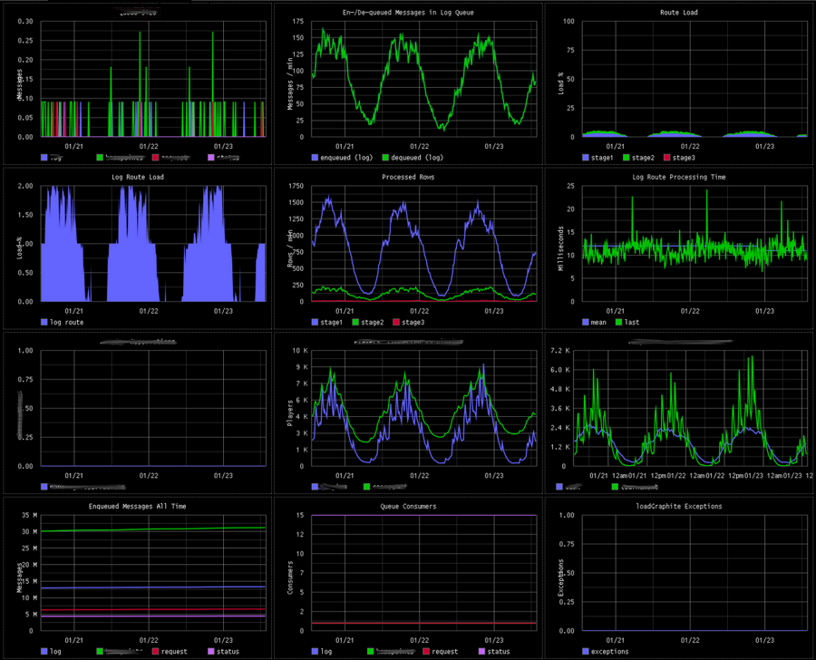
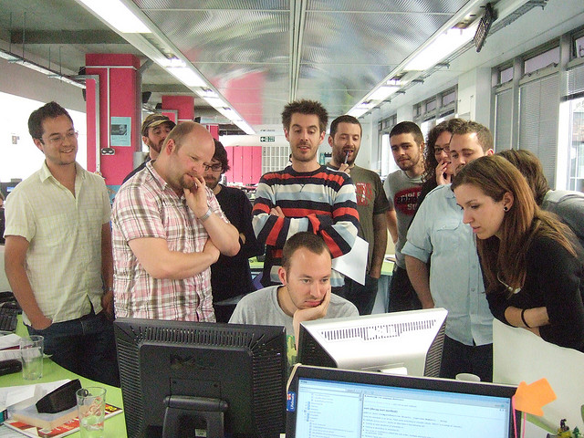
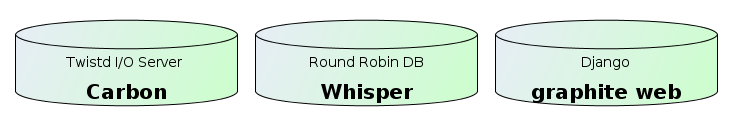
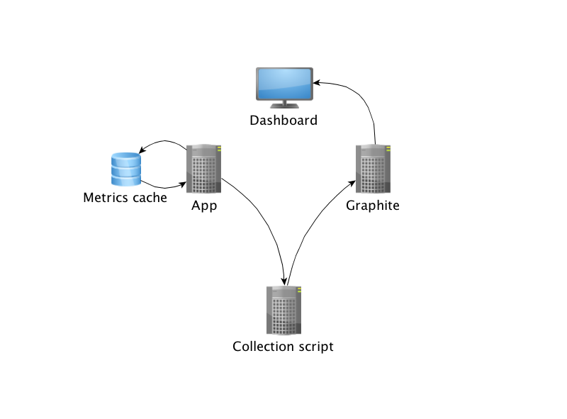
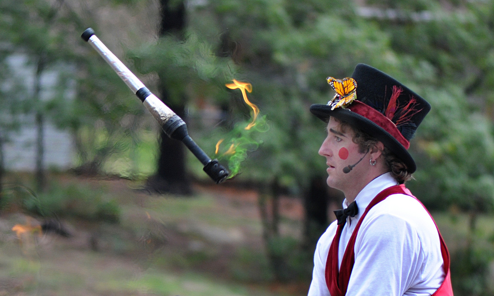
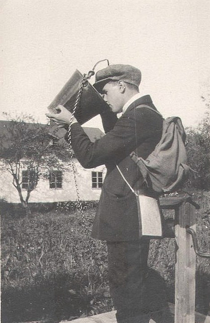
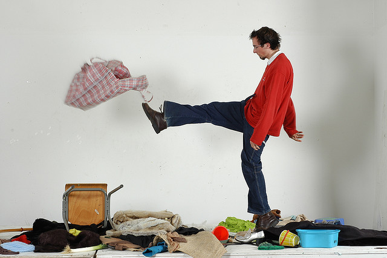
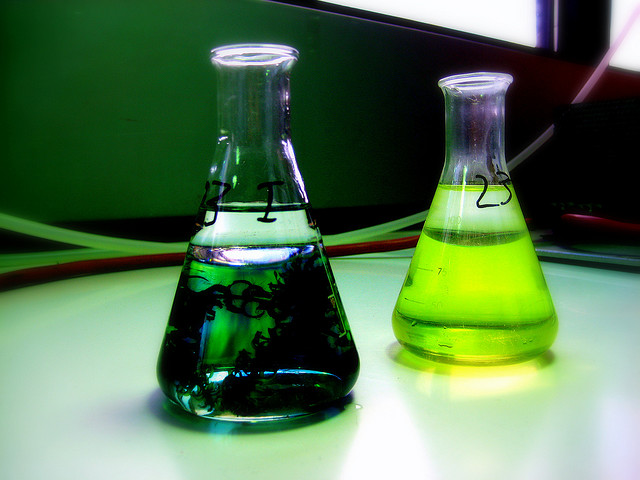

Ville Svärd | @villesv
Programmer, tester, architect...
Behaviour
Language
Perception
Three chapters
- A story
- A tool
- Observations and benefits
A story of monitoring
Is your team performing?

How about your product?

How will you know?
Once upon a time at
We had a problem
Blunt tools

A hero emerges
Graphite
- Set up
- Collect
- Presto!

Water cooler effect
an immediate side effect

Out of the darkness
And so it went on
Lone heroes are a myth
- Tools
- Environment
- Team
A tool
Graphite

Our implementation

"getting the data in"
"Hello metric"
(Python)
import time
import socket
def collect_metric(name, value, timestamp):
sock = socket.socket()
sock.connect( ("localhost", 2003) )
sock.send("%s %d %d\n" % (name, value, timestamp))
sock.close()
def now():
int(time.time())
collect_metric("meaning.of.life", 42, now())"Hello metric"
(Clojure)
(import [java.net Socket]
[java.io PrintWriter]))
(defn write-metric [name value timestamp]
(with-open [socket (Socket. "localhost" 2003)
os (.getOutputStream socket)]
(binding [*out* (PrintWriter. os)]
(println name value timestamp))))
(defn now []
(int (/ (System/currentTimeMillis) 1000)))
(write-metric "meaning.of.life" 42 (now))
[ demo time ]
"making sense"
Instant availability
Sharing is caring...
Data retention
Observations
Thirst for knowledge

Familiarity with behaviour

Increased confidence

Influence on design

A tool for testing

Starting early

Collaborative benefits
Nurturing conversation with data
The water cooler effect
- Graphs attract audience
- Natural talking matter
The team
- Curing blindness
- Making better decisions
Stakeholders
- Sparking curiosity
- Shared understanding
Managers
- Information as leverage
Behaviour
Language
Perception
Get to know your application
today!
Ville Svärd
ville.svard@agical.com | @villesv
Attributions
Images
Big Brother Noc Concerns Blunt tools Gather round Thirst Confidence Behaviour Design Testing Start monitoring Demo Time
Thanks
Leonard Axelsson | @xlson
The team at Entraction (IGT)
Mårten Gustafson